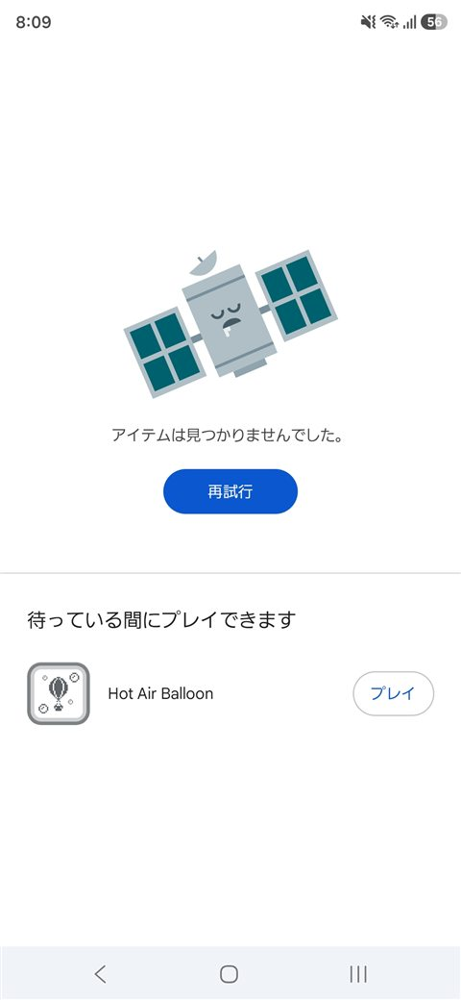

Android用ゲーム「ROBO SPEED」を Google Play で公開するために、 12人のテスターが14日間必要です。力を貸していただけると助かります。
参加は3分ほどで終わります。毎日遊ぶ必要はありません。
先にお伝えしておきます。すぐにはインストールできません。
参加を登録しても、Google 側に反映されるまで時間がかかります。30分ほどで入れるようになることもあれば、審査中は1〜2日かかることもあります。 そのあいだ Play ストアには「アイテムは見つかりませんでした」と表示されます。この画面です。
失敗ではありません。①と②を先に済ませておいていただければ、時間が経てば入れるようになります。
Google グループです。参加した人だけがアプリを受け取れます。承認待ちはありません。
グループに参加開いて「テスターになる」を押してください。ここを飛ばすと、次でインストールできません。
テストに参加②のページから Google Play へ進めます。以上で完了です。
スマホの Play ストアに入っている Google アカウントで参加してください。
普段お使いのメールアドレスとは違うことがあります。Play ストアを開いて右上の丸いアイコンを押すと、いま使っているアカウントが確認できます。ここが違うと「アプリが見つかりません」と出ます。
そのまま遊び続けられます。入れ直す必要はありません。 自己ベストや図鑑の記録も引き継がれ、公開版へは普通のアップデートとして切り替わります。
| iPhone のみ | Android アプリのため、参加できません。申し訳ありません。 |
|---|---|
| Google アカウントが無い | Android を使っていれば必ず持っています。Play ストア右上でご確認ください。 |

いちばん多いのは「まだ反映されていない」だけ、というものです。
参加を登録しても、Google 側に伝わるまで時間がかかります。 30分ほどで入れるようになることもあれば、審査中は1〜2日かかることもあります。 少し時間を置いて、もう一度お試しください。
メールでご連絡ください。aid.2019.run@gmail.com
カードを5枚そろえてロボットを組み立て、撃つ。色の揃いかたで威力が決まります。 敵は倒すたびに速くなるので、弱い役で早く撃つか、殴られるのを覚悟で強い役を待つかの判断が、 そのまま撃破数の差になります。
操作はタップだけ。無料で、アプリ内課金はありません。広告は結果画面と一時停止中にだけ出ます。
I'm a solo developer in Japan. To publish my Android game on Google Play, I need 12 testers opted in for 14 days. I'd really appreciate your help.
It takes about 3 minutes. You don't have to play every day.
Heads-up: you won't be able to install straight away.
After you opt in, it takes a while for Google to propagate it. Sometimes about 30 minutes; while the app is under review it can take a day or two. Until then the Play Store shows "Item not found" — this screen.
That is not a failure. Do steps 1 and 2 now, and the install will work once it comes through.
Only members of this group can receive the app. Joining is instant — no approval needed.
Join the groupOpen the link and press "Become a tester". Skipping this means step 3 won't work.
Opt inThe opt-in page links straight to the Play Store. That's it.
Please use the Google account that is signed in to the Play Store on your phone.
It is often not the email address you use day to day. Open the Play Store and tap your avatar in the top right to check. A mismatch gives you "item not found".
You can keep playing. No reinstall needed, and your records carry over — the public release arrives as an ordinary update.
| iPhone only | This is an Android app, so unfortunately you can't take part. |
|---|---|
| No Google account | If you use Android you already have one. Check the Play Store avatar, top right. |
Most of the time it simply hasn't propagated yet.
After opting in, Google needs time to push it through. Sometimes about 30 minutes; while the app is under review it can take a day or two. Give it a while and try again.
Email me: aid.2019.run@gmail.com
ROBO SPEED is a card-based score attack game. Match five cards to build a mech and fire it. The more the maker colours match, the harder it hits. Enemies get faster with every kill, so every hand is a choice: fire now with a weak hand, or take a beating and wait for a strong one.
Tap-only controls. Free, no in-app purchases. Ads appear only on the result and pause screens. The UI is in Japanese, but the game is almost entirely visual — no reading required.
Screenshots and a fuller description
If you're running a closed test too, send me your links at aid.2019.run@gmail.com and I'll opt in. I actually play the games I test.